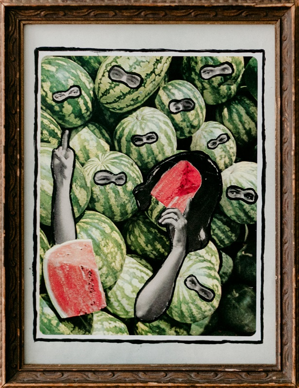
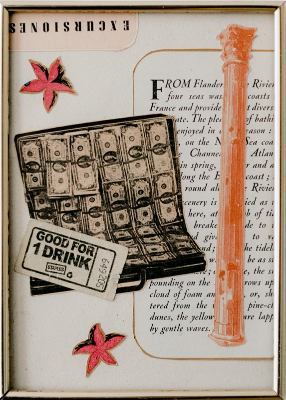

← Women at Sea Collages


One

Two
Three
Collage, wooden and metal frames.
An ongoing series of collages depicting
women's dreams and aspirations to remove themselves from patriarchal society.
Collages are made while listening to feminist scholars and authors on podcasts or through
audiobooks.
A counterpart to my Man and Land collage series.
Various sizes